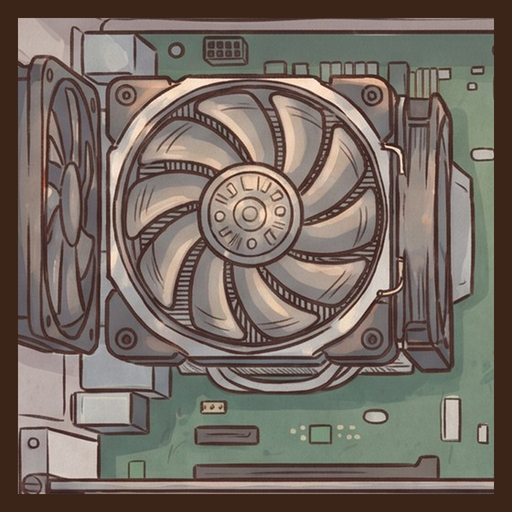

Bilgisayar Tamirci Simülatörü
Teşhis et, tamir et, büyü.
Kendi bilgisayar tamir dükkânını aç: müşterilerin getirdiği bozuk masaüstü ve dizüstü bilgisayarları gerçek araçlarla teşhis et, doğru parçayı tak, işini büyüt.
© 2026 YirmiYediDijital